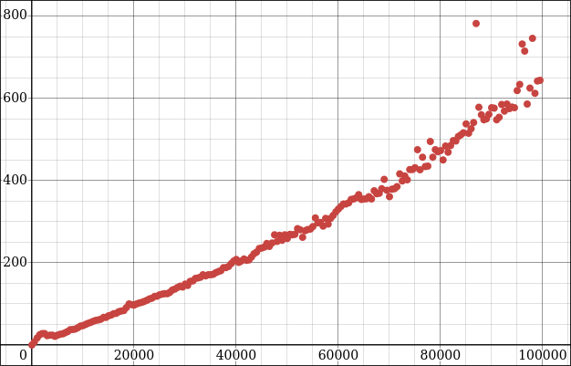
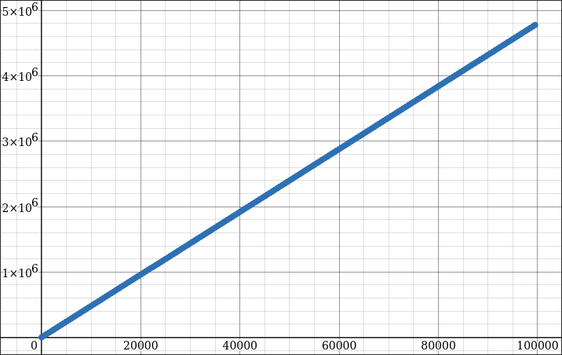
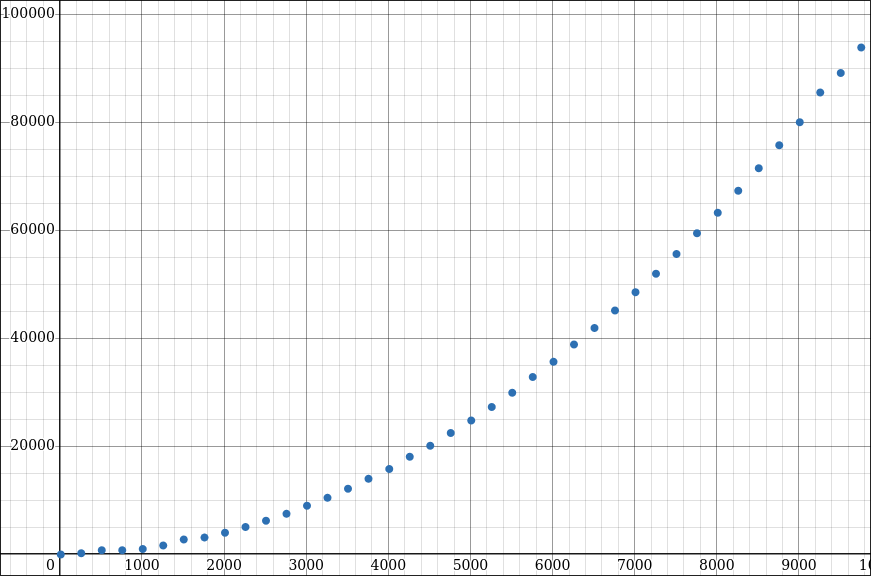

- Generated by
 1.16.1
1.16.1
|
rtprofiler.h
A simple header only performance measurement library for easy low effort benchmarks.
|
A simple header only performance measurement library for easy low effort benchmarks.
Just include rtprofiler.h in your main C file with RTBENCH_IMPLEMENTATION defined in a single translation unit (refer examples) and get going!
The profiler works by creating a testbench using the BENCH(...) macro see examples/basic_bench.c and then run our code to test within measurements (MEASURE_T) or attach probes to the code (BENCH_HEAP_RST, BENCH_HEAP_MSR, BENCH_STACK_RST, BENCH_STACK_MSR) to get the performance readings off of the code in question. I would highly recommend going through all the examples/ to better understand the profiler, its quite simple!
You can find documentation for this header in: https://rouvik.github.io/rtprofiler.h/
You can find example snippets in the examples/ directory.



Values plotted in desmos